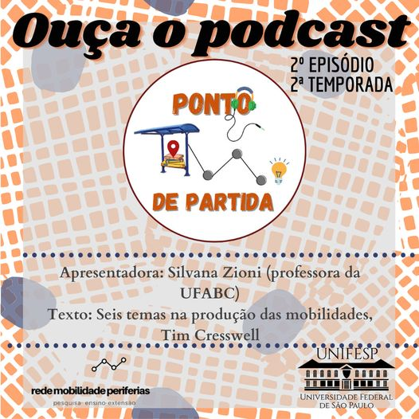
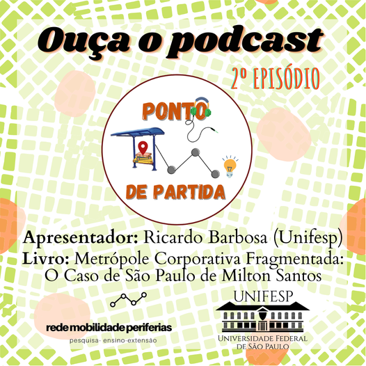
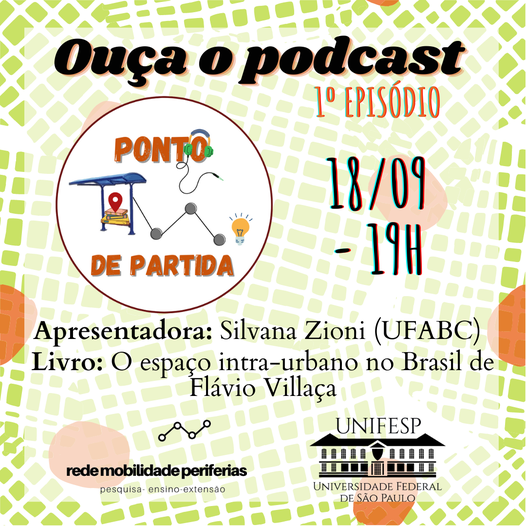

4 - Por uma Geografia das Redes da obra “A Natureza do Espaço”, de Milton Santos
No quarto e último episódio dessa segunda temporada, apresentaremos o capítulo "Por uma Geografia das Redes" da obra "A Natureza do Espaço", de Milton Santos. Neste capítulo, Santos aborda as redes nos seus aspectos de "realidade material" e "dado social". É assim que para o autor as redes não são apenas uma entidade técnica, mas sociotécnica. Com base nessa ideia, demonstra que a existência das redes é inseparável da questão do poder. E para entender como essa teoria nos ajuda a pensar o papel da circulação e a seletividade da fluidez nas cidades contemporâneas, Bruno Candido, Doutorando em Geografia Humana pela USP é quem apresenta os pontos centrais do capítulo. Aproveite o podcast!
Publicado em 16/07/2021.
clique para acessar o Spotify
clique para acessar o Youtube
3 - Transporte urbano, espaço e equidade: análise das políticas públicas, de Eduardo Vasconcellos
No terceiro episódio dessa temporada, apresentaremos o terceiro capítulo da obra "Transporte urbano, espaço e equidade: análise das políticas públicas", do engenheiro e sociólogo Eduardo Vasconcellos. Neste capítulo, o autor apresenta questões teóricas na perspectiva de uma abordagem sociológica e política para pensar o transporte urbano no sistema de circulação na cidade. Quem detalha os pontos centrais do capítulo é a geógrafa Flavia Ulian, Professora e coordenadora do curso de Tecnologia em Transporte Terrestre da FATEC Tatuapé. Aproveite o podcast!
Publicado em 25/06/2021.
clique para acessar o Spotify
clique para acessar o Youtube

2 - Seis temas na Produção das Mobilidades, de Tim Cresswell
Neste episódio, a obra apresentada será o capítulo do livro "A Produção das Mobilidades, organizado por Renato Miguel do Carmo e José Alberto Simões". Esse capítulo intitulado como "Seis temas na Produção das Mobilidades" é escrito por Tim Cresswell e tem por objetivo argumentar a mobilidade sobre o aspecto social e político. Tim Cresswell é um dos autores que traz a discussão sobre a produção das mobilidades nas mais diversas escalas e como um dos recursos mais importantes do século XXI. Quem apresenta o texto é Silvana Zioni, Professora Adjunta no Centro de Engenharia, Modelagem e Ciências Sociais Aplicadas na Universidade Federal do ABC. Aproveite o podcast!
Publicado em 21/05/2021.
clique para acessar o Spotify
clique para acessar o Youtube
1 - A ideologia social do carro, de André Gorz
No primeiro episódio, da segunda temporada de "Ponto de Partida", a obra apresentada será "A ideologia social do carro", de André Gorz. A obra tem por objetivo de discutir o papel dos carros em nossa sociedade e cidade. A obra, que é um clássico, coloca o automóvel como um exemplo paradoxal de um objeto luxuoso, ao mesmo tempo, desvalorizado por sua difusão, mas não por sua ideologia. Quem comentários os aspectos da obra é Daniel Santini, jornalista, coordenador da Fundação Rosa Luxemburgo e escritor do livro "Passe Livre: As Possibilidades da Tarifa Zero Contra a Distopia da Uberização".
Publicado em 23/04/2021.
clique para acessar o Spotify
clique para acessar o Youtube
2º semestre de 2020
4 - Morte e vida de grandes cidades de Jane Jacobs
No quarto episódio de Ponto de Partida, Meli Malatesta apresenta uma obra "Morte e Vida de Grandes Cidades" de Jane Jacobs. O livro se baseia em questionar o desenvolvimento do planejamento urbano das grandes cidades e os princípios de reurbanização em contrapartida às questões de natureza socioeconômica.
Publicado em 8/12/2020.
clique para acessar o Spotify
clique para acessar o Youtube
3 - "A Justiça Social e a Cidade" de David Harvey
No terceiro episódio de Ponto de Partida, Bruno Cândido apresenta a obra "A Justiça Social e a Cidade" de David Harvey. O livro é uma tentativa de estabelecer novamente o paradigma da Geografia Urbana, que não pode permanecer desconectada e imparcial num momento em que a pobreza urbana e machos sociais se acentuam.
Publicado em 20/11/2020.
clique para acessar o Spotify
clique para acessar o Youtube

2 - Metrópole Corporativa Fragmentada: O Caso de São Paulo de Milton Santos
Neste episódio, apresentado por Ricardo Barbosa acerca da obra do professor Milton Santos que traz a tona a imobilidade relativa urbana, fundamentada em uma urbanização corporativa que fragmenta a cidade em detrimento das classes subalternizadas.
Publicado em 23/10/2020.
clique para acessar o Spotify
clique para acessar o Youtube

1 - O Espaço intra-urbano no Brasil de Flávio Villaça
No primeiro episódio de "Ponto de Partida", contamos com a apresentação de Silvana Zioni (UFABC), que compartilha com os ouvintes a trajetória de pesquisa do autor do livro "O espaço intra-urbano no Brasil" e detalha mais aprofundadamente sobre o sétimo capítulo: "A segregação urbana".
Publicado em 18/09/2020.
clique para acessar o Spotify
clique para acessar o Youtube